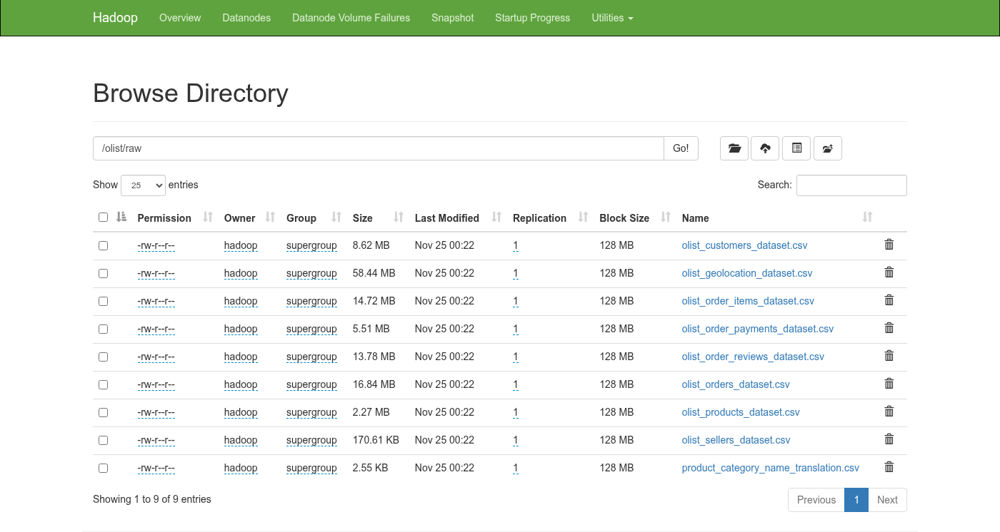
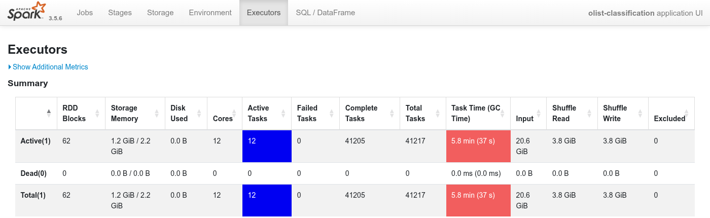
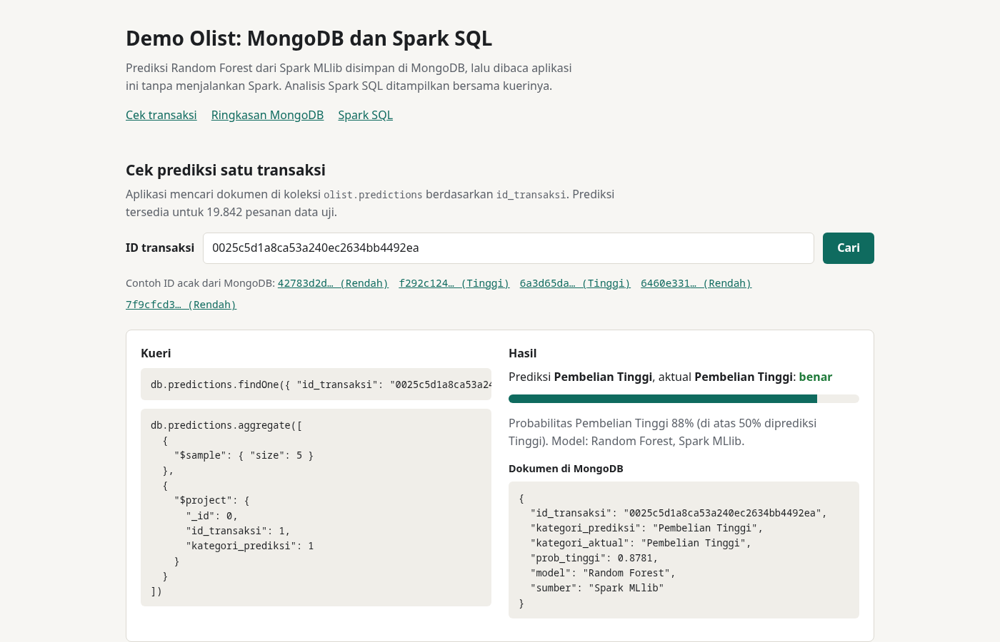

Proyek Akhir Big Data 2026 · Kelompok 1
Rute data
Kaggle→HDFS→Spark→MLlib→MongoDB
98.199 pesanan · 9 tabel · Brasil 2016–2018
Pengirim
Mohammad Ariffansyah
[Nama Anggota 2]
[Nama Anggota 3]
[Nama Anggota 4]
S1 Teknik Informatika · Universitas Negeri Surabaya
Penerima
Ersha Aisyah Elfaiz, S.Si., M.T.I.
Pembelian Tinggi?
02 · PertanyaanKelompok 1 · 02/16
Apa yang membuat sebuah pesanan bernilai tinggi?
Label
Pembelian Tinggi jika total harga barang ≥ median 86,90 BRL, selain itu Pembelian Rendah.
49.119 Tinggi · 49.080 Rendah: kelas seimbang
Syarat
Ditebak dari atribut yang ada saat pesanan dibuat: berat, ongkir, kategori, cicilan, lokasi.
Harga tidak boleh dipakai, karena harga adalah jawabannya.
Tanpa harga
03 · Pilihan masalahKelompok 1 · 03/16
Kenapa klasifikasi, bukan clustering pelanggan?
96,96%
pelanggan Olist hanya berbelanja satu kali.
92.096 dari 94.983 pelanggan · hasil Spark SQL
Akibatnya
Frekuensi belanja hampir sama untuk semua orang, jadi pola pembelian per pelanggan sangat tipis.
→ Kami mengklasifikasikan setiap transaksi, sesuai pilihan kedua di topik Kelompok 1.
04 · DatasetKelompok 1 · 04/16
Isi paket: 9 tabel Olist
Daftar isi · baris
| customers | 99.441 |
| geolocation | 1.000.163 |
| order_items | 112.650 |
| payments | 103.886 |
| reviews | 99.224 |
| orders | 99.441 |
| products | 32.951 |
| sellers | 3.095 |
| category_translation | 71 |
1,55 jt
baris data mentah · 120,3 MB · Brasil 2016–2018
Sumber
Kaggle · olistbr/brazilian-ecommerce
Lisensi CC BY-NC-SA 4.0
05 · ArsitekturKelompok 1 · 05/16
Rute data dari Kaggle sampai aplikasi
Kaggle9 CSV
→
HDFS/olist/raw
→
SparkETL + 6 kueri SQL
→
HDFS/olist/curated (Parquet)
→
Spark MLlibDT · RF · GBT
→
HDFSmodel + prediksi
+
MongoDBolist.predictions
→
AplikasiNext.js
Container
namenode · datanode · spark · mongo (Podman)
Satu perintah
./run.sh menjalankan semuanya, ± 10 menit
Bisa diulang
Dijalankan ulang, hasilnya sama persis
06 · HDFSKelompok 1 · 06/16
Data mentah tersimpan di HDFS

Perintah
hdfs dfs -mkdir -p /olist/raw
hdfs dfs -put -f *.csv /olist/raw
hdfs dfs -du -s -h /olist/raw
Hasil
9 berkas · 120,3 MB · replikasi 1, karena ada satu datanode
07 · Big dataKelompok 1 · 07/16
Bukan ukurannya, tapi cara mengolahnya
HDFS
Berkas dipecah jadi blok dan disebar ke datanode. Mau lebih besar? Tambah node.
Spark
Data dibagi partisi, diproses paralel di memori oleh 12 core.
MLlib
Model dilatih langsung di atas data terdistribusi.
41.205 task
20,6 GiB dibaca
3,8 GiB shuffle

08 · Spark ETLKelompok 1 · 08/16
Data kotor masuk, data bersih keluar
Dibuang / dirapikan
- 261.831 baris geolokasi duplikat
- 1.234 pesanan batal atau tidak tersedia
- 551 ulasan ganda, diambil yang terakhir
- 33 koordinat di luar Brasil
- 3 pembayaran tanpa jenis
98.199
pesanan bersih · 35 kolom · Parquet di HDFS
9 tabel digabung per pesanan + jarak penjual–pembeli (Haversine) + rasio ongkir
Bersih
09 · Spark SQLKelompok 1 · 09/16
Paket terlambat, ulasan anjlok
Tepat waktu · 89.443 pesanan
4,29
rata-rata ulasan (1–5)
9,27% ulasan buruk
Terlambat · 6.381 pesanan
2,27
rata-rata ulasan (1–5)
62,42% ulasan buruk
6,66% pesanan terlambat. Tertinggi di MA (17,43%), terendah di PR (4,04%). Kueri: GROUP BY + AVG + HAVING COUNT(*) >= 500
Terlambat
10 · Spark SQLKelompok 1 · 10/16
Penjualan naik, puncaknya Black Friday
Pendapatan barang per bulan
Cara bayar
77%
pesanan dibayar kartu kredit, rata-rata 3,51 kali cicilan
boleto 19,89% · voucher 1,56% · debit 1,54%
11 · Spark MLlibKelompok 1 · 11/16
Model menebak tanpa melihat harga
Label
≥ 86,90 BRL → Tinggi
selain itu → Rendah
Fitur · 22 numerik + 4 kategori
Berat, dimensi, ongkir, rasio ongkir per item/kg/km, cicilan, kategori, lokasi, waktu beli
Sengaja dibuang
harga, nilai bayar: pembentuk labelulasan, keterlambatan: baru diketahui setelah selesai
StringIndexer→Imputer→VectorAssembler→DT · RF · GBT
Latih 78.357 / uji 19.842 (split hash 80/20) · 3-fold CV, 27 kombinasi kedalaman pohon
12 · HasilKelompok 1 · 12/16
Random Forest paling akurat
ModelF1 data uji · sumbu mulai 0,5 (tebakan acak)AUCLatih (dtk)
Random Forest
0,9023
0,967103,2
GBT
0,8881
0,95761,9
Decision Tree (tuning)
0,8455
0,8723,3
DT tanpa fitur rasio
0,8311
0,8683,1
DT dangkal (4 tingkat)
0,7525
0,7921,4
Kenapa lebih baik
Rata-rata 50 pohon mengurangi kesalahan satu pohon, dan probabilitasnya lebih halus. Unggul 5,7 poin F1 dari Decision Tree.
Harganya
Latih 103 dtk vs 3,3 dtk, dan aturannya tidak bisa dibaca. Fitur rasio menambah 1,4 poin pada Decision Tree.
Terbaik
13 · Decision TreeKelompok 1 · 13/16
Aturan yang bisa dibaca manusia
Jika
berat ≤ 1,2 kg dan ongkir ≤ 15,39 BRL
→ Rendah
kecuali dicicil lebih dari 7 kali
Jika
berat > 1,2 kg
→ Tinggi
kecuali ongkir ≤ 17,92 BRL dan tanpa cicilan
Jika kategori
kesehatan-kecantikan, jam, komputer, parfum, olahraga
→ Tinggi bila > 254,5 g
Pohon 4 tingkat
19 simpul · F1 uji 0,7525 · latih 0,7536
Kurang akurat, tapi bisa dijelaskan ke tim bisnis dan tidak overfitting.
14 · Eksperimen skalaKelompok 1 · 14/16
40× data, hanya 4,5× waktu
Waktu latih Decision Tree (rata-rata 3 kali)
F1 makin naik
- 10% · 7.827 baris
2,01 dtk · F1 0,7595 - 25% · 19.486 baris
2,59 dtk · F1 0,7859 - 50% · 39.121 baris
3,04 dtk · F1 0,8157 - 100% · 78.357 baris
3,74 dtk · F1 0,8455
Belum mendatar, jadi data lebih banyak masih membantu.
2× dan 4× = data latih diduplikasi, hanya waktunya yang diukur
15 · MongoDBKelompok 1 · 15/16
Hasil siap dipakai aplikasi

Koleksi
olist.predictions: 19.842 dokumen prediksi
olist.metrics: riwayat setiap pelatihan
Kenapa bukan HDFS saja?
HDFS untuk berkas besar yang dibaca Spark. MongoDB untuk mencari satu pesanan dalam milidetik.
Demo: ./run.sh app → localhost:3000
16 · KesimpulanKelompok 1 · 16/16
Pipeline
HDFS → Spark → MLlib → MongoDB, satu perintah, hasil bisa diulang
Model
Random Forest F1 0,90 · AUC 0,97; Decision Tree 0,85
Keterbatasan
Satu laptop, satu datanode, ± 100 ribu pesanan; RF dan GBT belum di-tuning
Terima kasih
Tanya jawab